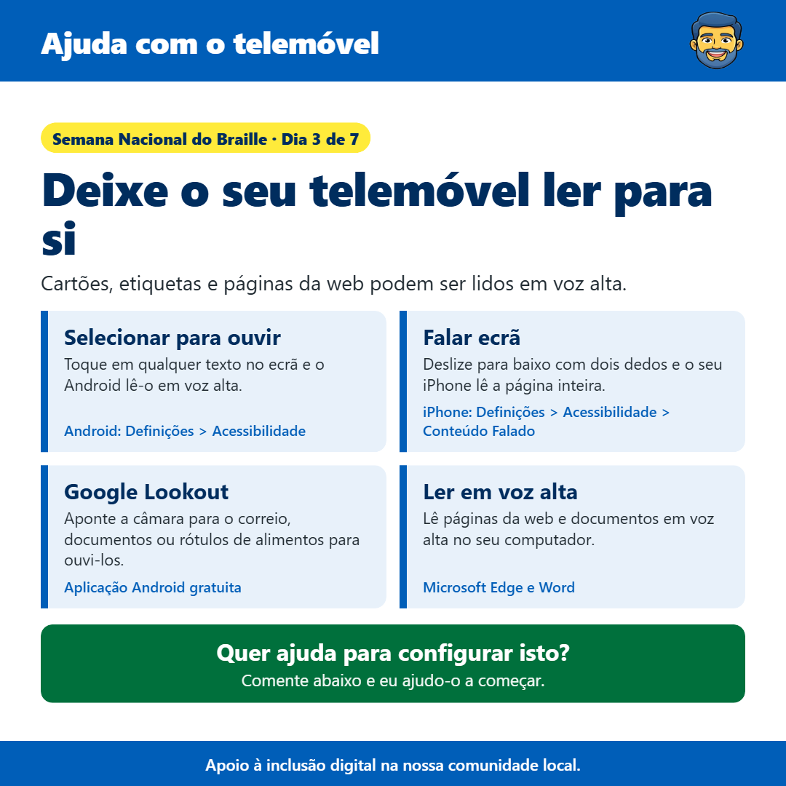

Deixe o seu telemóvel ler para si
By James Gartshore · · Health and wellbeingEm resumo
- Selecionar para Falar: Toque em qualquer texto no ecrã e o Android lê-o em voz alta. (Android: Configurações > Acessibilidade)
- Falar Ecrã: Deslize para baixo com dois dedos e o seu iPhone lê a página inteira. (iPhone: Configurações > Acessibilidade > Conteúdo Falado)
- Google Lookout: Aponte a câmara para um poste, documentos ou rótulos de alimentos para ouvi-los. (Aplicação Android Gratuita)
- Ler em Voz Alta: Lê páginas da web e documentos em voz alta no seu computador. (Microsoft Edge e Word)

Olá a todos, é o terceiro dia da Semana Nacional do Braille, e hoje quero partilhar algumas formas gratuitas de fazer o seu telemóvel ou computador ler coisas em voz alta para si.
Nos telemóveis Android, existe um recurso chamado Select to Speak. Uma vez ativado, pode tocar num botão pequeno e depois tocar em qualquer texto no ecrã, como uma mensagem, um e-mail ou uma página da web, e o seu telemóvel irá ler em voz alta. Vai encontrá isso em Definições, em Acessibilidade.
Num iPhone, Speak Screen faz algo semelhante. Uma vez ativado, deslize o dedo de cima para baixo no ecrã com dois dedos e o seu iPhone irá ler tudo na página. Vai encontrá isso em Definições, depois Acessibilidade, depois Conteúdo Falado.
Google Lookout é uma aplicação Android gratuita que usa a sua câmara para ler coisas no mundo real. Aponte-a para uma letra, um documento, um rótulo de alimento ou um sinal, e ela irá ler o texto em voz alta. Também pode descrever objetos e digitalizar códigos de barras em embalagens.
E num computador, o Microsoft Edge e o Word têm ambos um recurso gratuito de Ler em Voz Alta. No Edge, clique com o botão direito numa página da web e escolha Ler em voz alta, e ele lerá a página para si enquanto destaca cada palavra.
Se quiser ajuda para configurar algum destes, basta enviar-me uma mensagem e farei o meu melhor para ajudar.
Espero que isto ajude, e sinta-se à vontade para partilhar com quem possa achar útil.